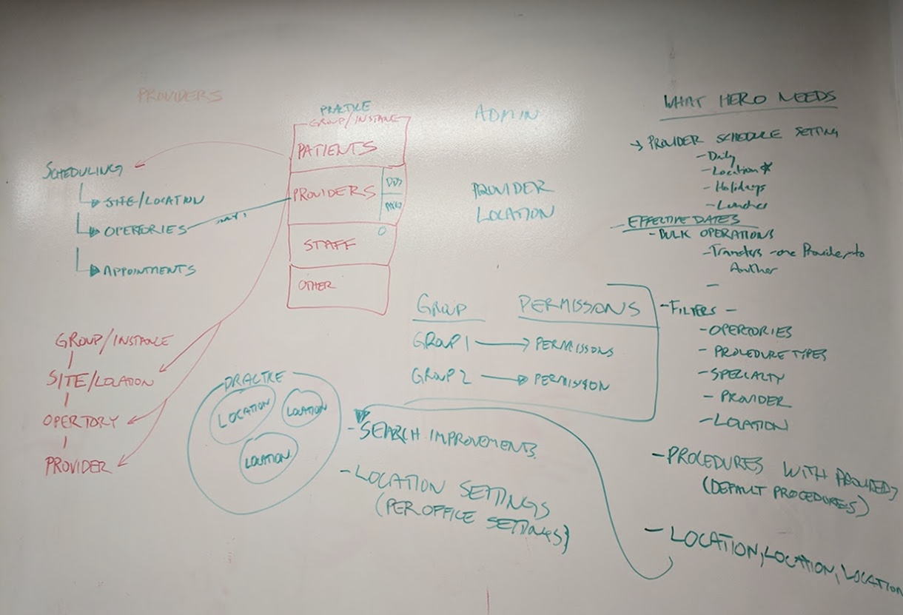
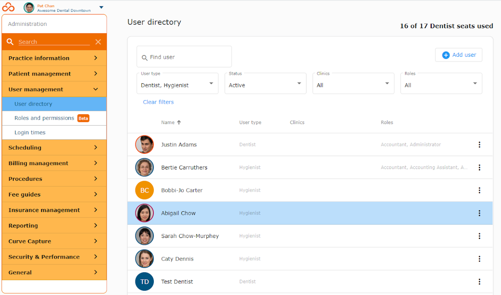

01 — Roles and permissions overhaul
Curve Dental's existing roles-and-permissions system was a genuine business liability. It was rigid, difficult to use, hard to administer, and not flexible enough to support a wide range of practice structures. This created real problems for sales, customer success and internal security: deals stalled in demos, practices struggled to manage access correctly, and the system could not meaningfully separate duties in a way that protected the business from fraud and operational error.
As UX team lead, I began by digging into the underlying customer behaviour rather than jumping to a design answer. I conducted interviews and design validation work with practice administrators, owner-operators and stakeholders across engineering, sales and customer success. I also worked closely with architecture and engineering teams to understand what the backend could support and where constraints would shape the solution. That early alignment was critical because the problem was larger than interface design — it required a better understanding of how customers actually structured permissions and how the platform needed to scale.
The result was a more granular, centralised administration model built to support both small offices and multi-site DSOs. It included much stronger role definitions, better visibility into who had access and why, location-aware controls, and a user directory designed around real administrative needs rather than assumptions. I then carried the project through to product management, helping sequence rollout, align stakeholders and guide implementation toward general availability.
This work showed me something important: some of the highest-leverage product work is not flashy, but it is foundational. When access control and admin workflows are badly designed, they create friction throughout the business and limit revenue. By reworking the system properly, we removed a meaningful bottleneck in the product and improved the trust customers placed in the platform.


.PNG)
 PM Project Workbench
PM Project Workbench